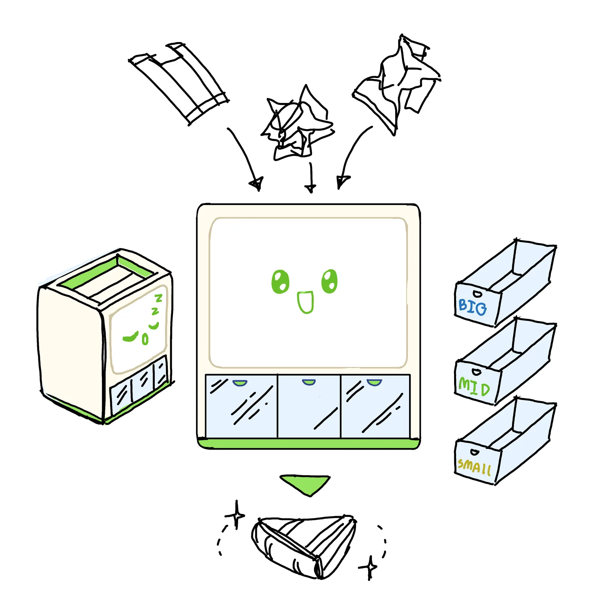
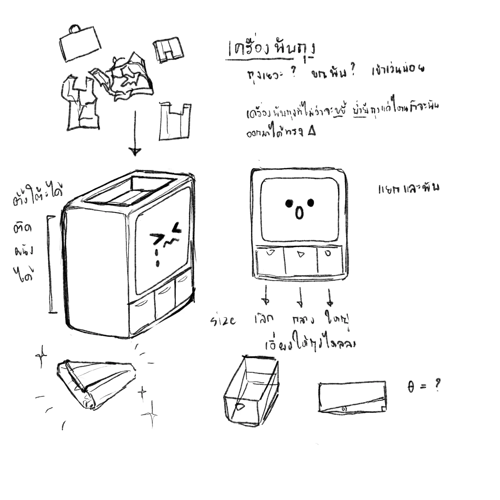

Plastic Bag Folder
A concept machine that folds plastic bags into neat triangles and sorts them by size.
- Context
- General-education course
- Brief
- Design around the UN Sustainable Development Goals (SDGs)
- Tools
- Sketching
- Status
- concept

Brief
A general-education course asked us to design something around the SDGs.
The idea
- Fold into triangles. The machine folds a loose plastic bag into a compact triangle.
- Sort by size. Folded bags are separated by size.
Result
A concept, shown here as a hand sketch and a coloured version.
Sketches & process
